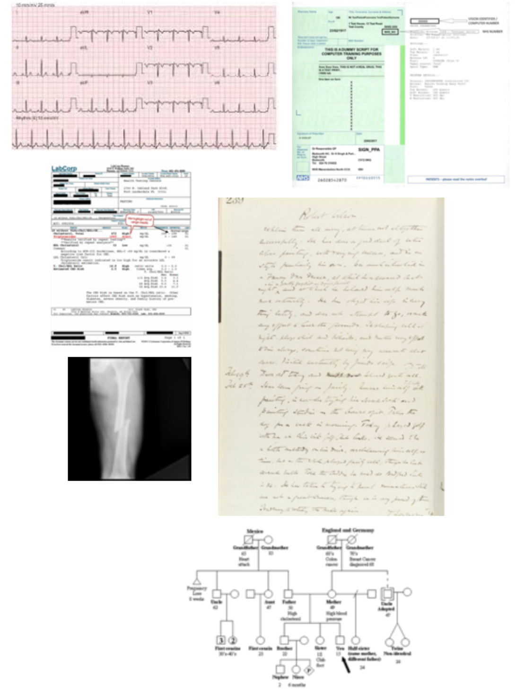
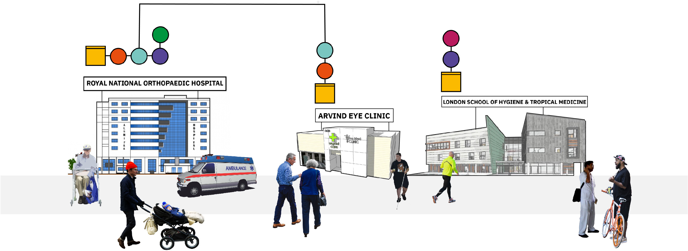
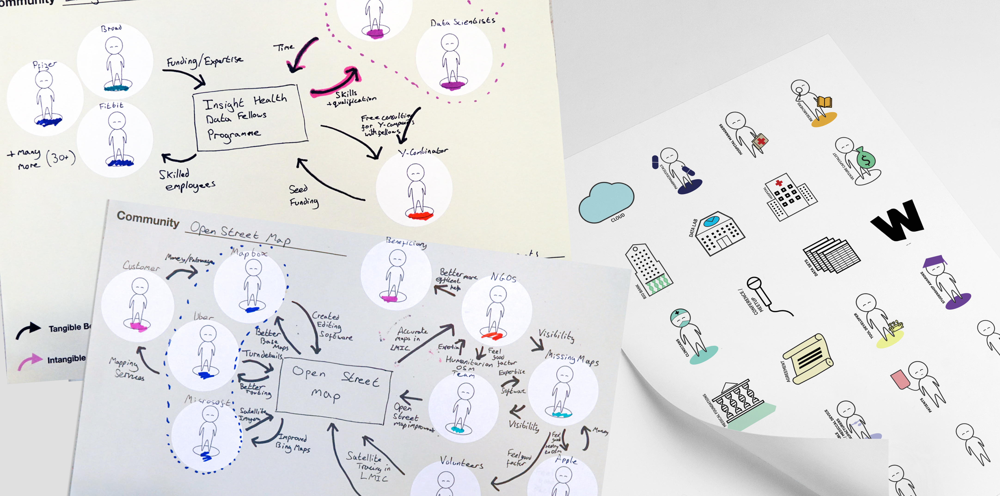

Background
In recent years, the world has witnessed a sea of change in the way health data is used in research. With open source software code on the rise, Wellcome wanted to understand how bio-informaticians, machine learning experts, health innovators and public health experts were currently utilising and contributing to the existing ecosystem. They also sought to identify an intervention focus for a new Wellcome funded open-source community, ideas for software tools and a service design blueprint for this new community.
Insights
The notion of a single file, containing “medical records,” is a fiction. Hillary Clinton’s medical records are in bits and pieces, in doctors’ filing cabinets, hospital records departments, and in hard-to-access computers
M. Sanger-katz in New York Times, Full ‘Medical Records’ for Trump and Clinton? That’s Fiction
We have found that digitised primary care clinic and hospital records represent the most sustainable collection mechanism which can be enabled for understanding human health, wellbeing, disease progression and clinical deterioration. These records comprise of notes from doctors, lab diagnostics, blood test results, medication prescription and intake histories, family size and medical histories, imaging data, vital stats like blood pressure measurements.
Even though more and more clinics are digitized, this data is not available for research and innovation purposes due to varied socio-technical barriers (like the complexity of anonymisation ), market forces (there are no actual incentives for private EHR companies / medical device manufacturers to build interoperability), legal crossroads (there is a complete lack of clarity on IP rights of hospitals developing data-driven products) and technical barriers (like issues of data completeness, and the statistical complexities of integration of different types of health data).
The good news is that data science has advanced enough that now the technical barriers can be tackled easily. This suggests Wellcome can play an important role in addressing the gap left by market forces by developing open source and interoperable software tools and address the social-technical barriers by developing educational and legal tools.
Approach
Our approach started with an analysis of interviews conducted by the Wellcome Team, to understand the known themes and develop a list of possible intervention areas. We then conducted 22 interviews with experts, spending time with them to understand their data pipelines, workflows and toolsets. We shared the intervention areas as provocations when appropriate during the interviews and with every interview added/ merged intervention areas based on our most up to date understanding.
Three weeks into the project we had synthesised 10 intervention areas with accompanying user stories, and identified “10 principles for good open source communities”. There followed co-design sessions with the team using making kits. The resulting three intervention areas and communities were visualised using collages and circulated back to the 22 interviewees for feedback and road mapping. The feedback was freshly analysed to define the shared project for the Wellcome Community, develop a road map for tools and a service design blueprint.
Results
At the end of the project, we were able to give Wellcome a vast and multi-faceted understanding of availability and innovation readiness extent of various types of health data & (genomic data, clinical phenotypic data, cellular data, population health data) and identified an intervention area: tools linking together regularly collected clinical phenotypic datasets to make the research and innovation ready (and entirely out-mode longitudinal studies one day), pointed out 6 types of software tools and additional educational and legal tools to tackle the issue of adoption.